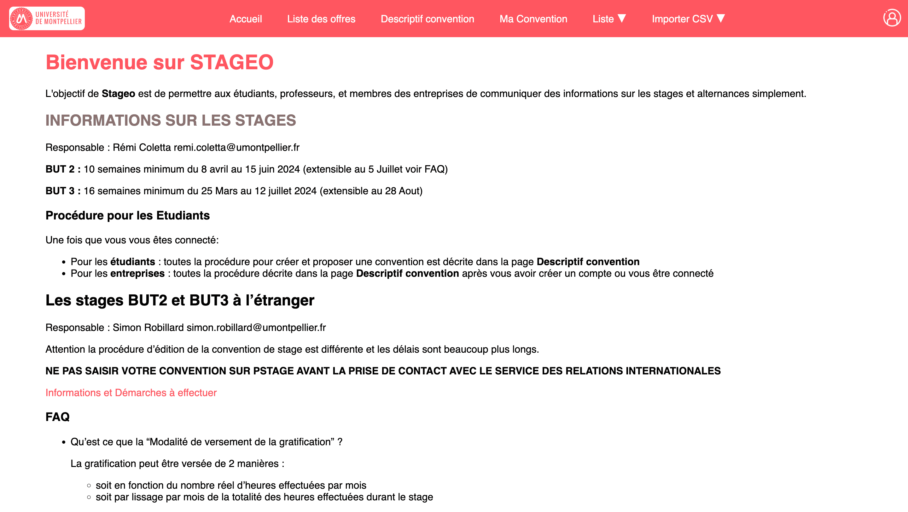

Ce projet, réalisé en deuxième année de BUT informatique, consistait à produire un site web, en php avec l'utilisation du modèle MVC, en html/css et en utilisant la méthode agile, ce site web serai utilisé par le personnel de l’IUT ainsi que les étudiants. Ce site doit gérer les stages et alternances des étudiants.
RESSOURCES
Développement web
Projet en groupe (5 étudiants)
Qualité de développement
Gestion de projet
CONTEXTE
Durée : 4 mois (4 sprints)
Évaluation : livraison de produit à chaque fin de sprint, oral de 30min ainsi qu’un pdf de la revue de sprint.
Attente : utilisation du modèle MVC ainsi que de la méthode agile (SCRUM).
Contrainte : minimiser le nombre de mails avec le client

Voici la page d’accueil de notre site web, nommée « Stageo », présente toutes les informations requises par le client. Cette image affiche un large éventail de pages dans le menu de navigation, résultant de ma connexion en tant qu’étudiant et secrétaire. Le site est entièrement réactif et s’adapte de manière fluide à chaque utilisateur, que ce soit une entreprise, un professeur ou tout autre acteur impliqué dans le processus.
Relations entre les réalisations personnelles et le programme de BUT Informatique
CE 1.01 - Réaliser : respecter les besoins décrits par le client.
Ex : Utilisater le cahier des charges remis parle client
CE 5.01 - Conduire : communiquer efficacement avec les différents acteurs d'un projet.
Ex : Organiser des réunion avec le client ou avec les développeurs ou encore du personnel de l'IUT.
CE 6.04 - Collaborer : développer une communication efficace et collaborative.
Ex : Mettre en place un Discord et des réunions quotidiennes, notamment en tant que Scrum Master.
AC 21.01 - Réaliser : élaborer et mettre en place les spécifications fonctionnelles et non fonctionnelles à partir des exigences.
Acquis
Ex : Respecter le cahier des charges et intégrer les retours du client tout au long du projet.
AC 21.02 - Réaliser : appliquer des principes d'accessibilité et d'ergonomie.
Acquis
Ex : Utilisation des mêmes couleurs que le site de l'UM, et communication auprès d'acteurs externes pour obtenir des avis utilisateurs.
AC 25.04 - Conduire : définir et mettre en oeuvre une démarche de suivi de projet.
Acquis
Ex : Utiliser la méthode SCRUM en tant que Scrum Master et gérer l'équipe au travers d'outils comme Trello et Discord.
AC 26.04 - Collaborer : rendre compte de son activité professionnelle.